The French Open Science Monitor
Steering the science based on open bibliographic databases
February 3, 2024
FOSDEM
Anne L'Hôte
Data engineer & software craftswoman

Objectives
National Plan for Open Science in 2018, the monitor has been designed
as:
-
👑 a sovereign and evolving tool for assessing the impacts of the open science
public policy
-
🔧 a strategic tool to refine and adjust open science public policies
- 👩‍🔬 a lever for improving knowledge of French scientific production, beyond the Open Science aspects
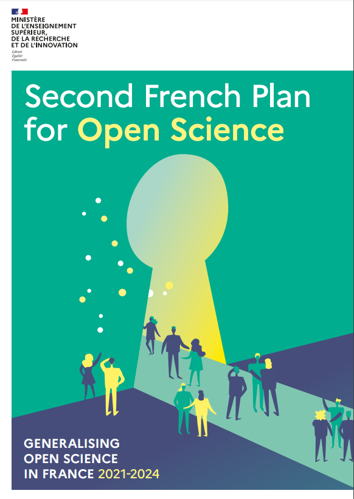
The monitor is a command for
- monitoring and steering public policy
- by taking into account bibliodiversity
- sharing and openness to encourage transparency and reproducibility
-
🧗 These constraints led us to choose the difficult path
- at the methodological level, in particular for detection of affiliations and disciplinary fields
- at the operational level, with a IT infrastructure adapted
Publications
Current situation
#1 Extract data
- PubMed, Crossref, HAL
- 🏗️ Automatic country detection (affiliation-matcher)
#2 Detect the country of affiliations

- 🏗️ Automatic country detection (affiliation-matcher)
#3 Consolidate the opening status
- Open access detection: Unpaywall
- 🏗️ Classification of open access types
#3 Consolidate the disciplinary classification
- Training data : Pascal and Francis, Field of Research (FoR)
- 🏗️ Automatic classification models (fastText)
#4 Share the results
#4 Share the results

- 200 local variations
Indicators
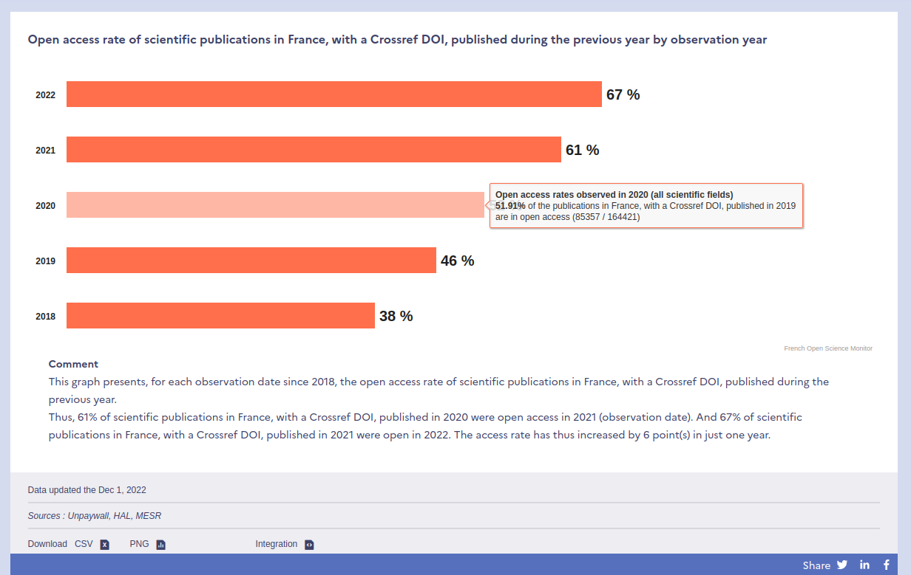Indicators
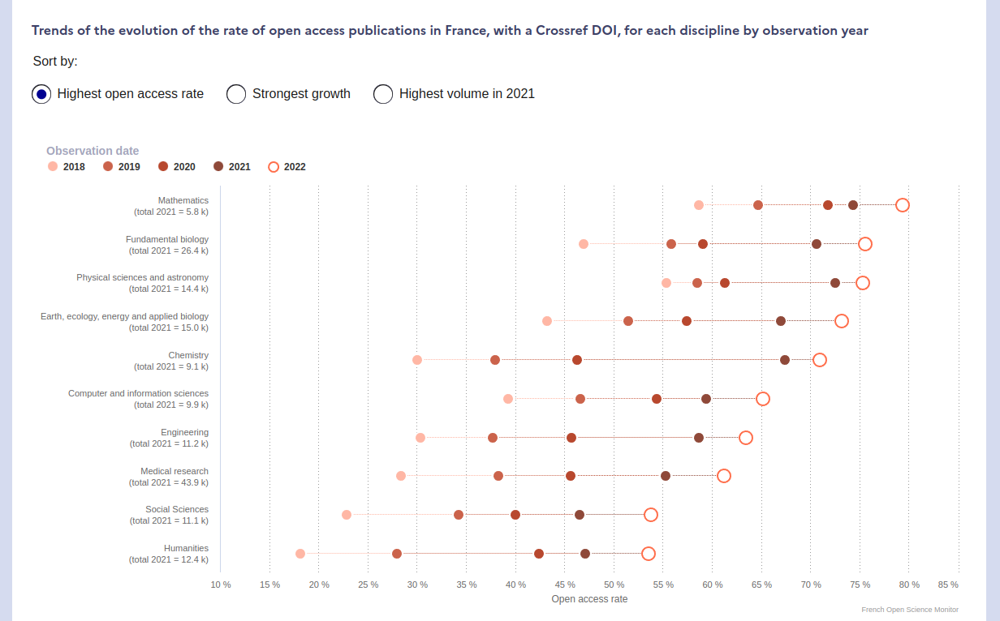Data, code and software
#1 Collect data
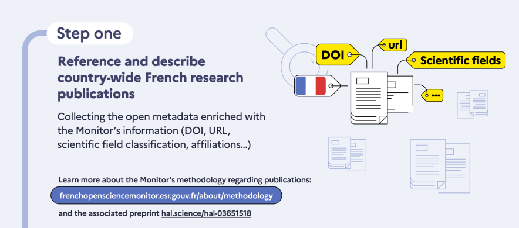#2 Download PDFs, the open ones
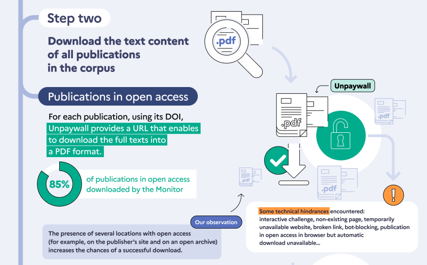#2 Download PDFs, the closed ones
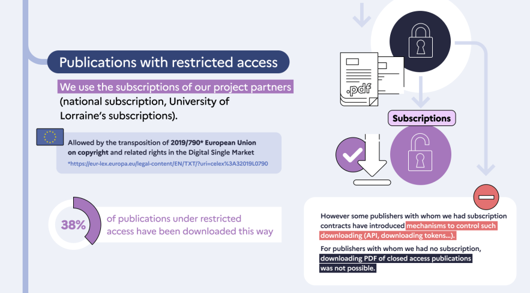#3 Consolidate metadata - Grobid
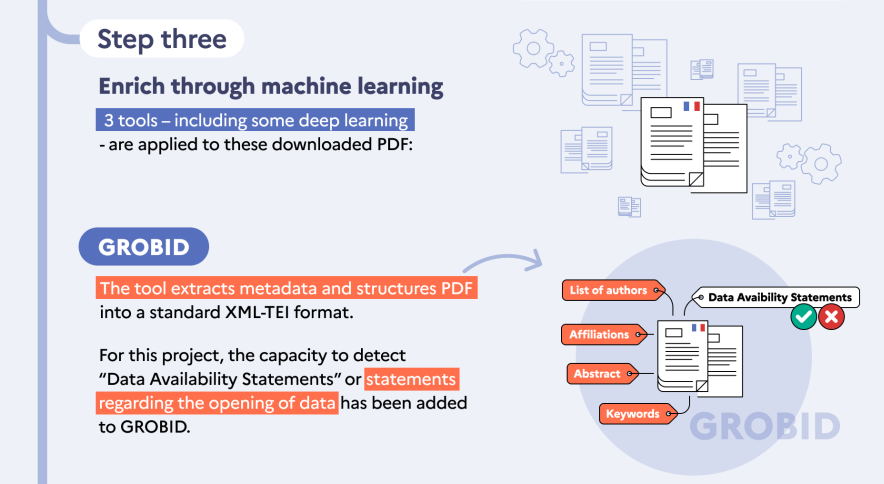#3 Consolidate metadata - DataStet & Softcite
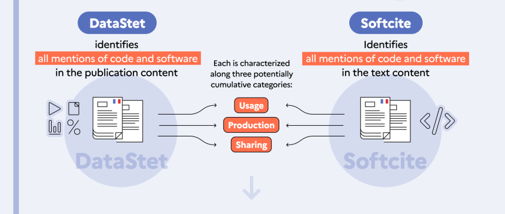#4 Indicators
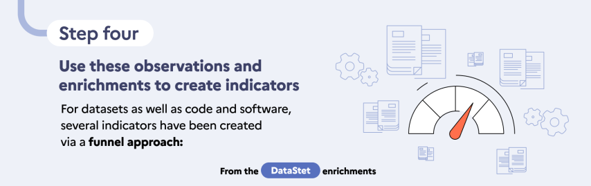Indicators
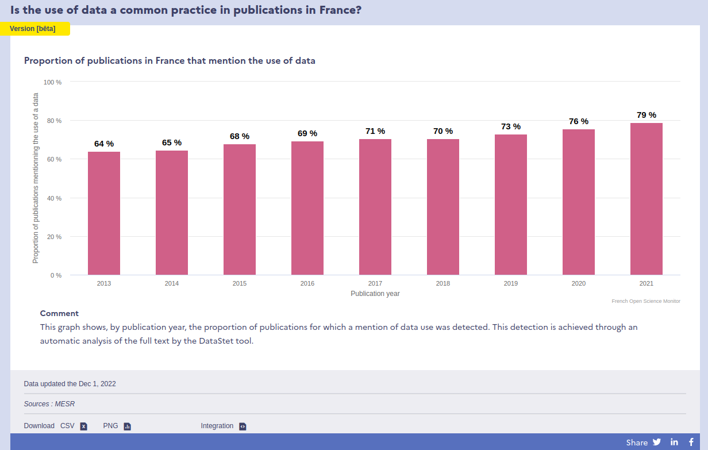Indicators
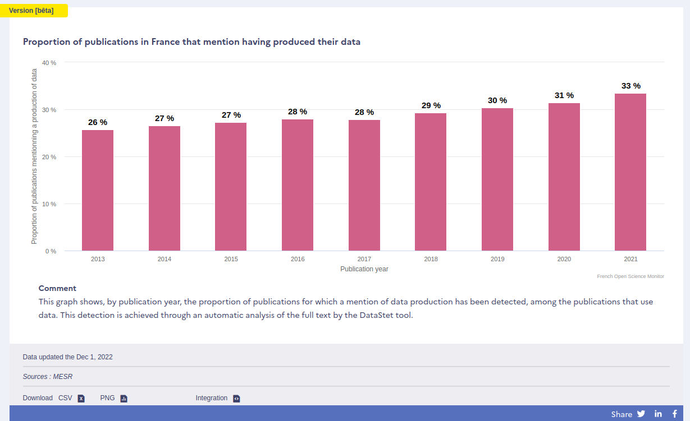Indicators
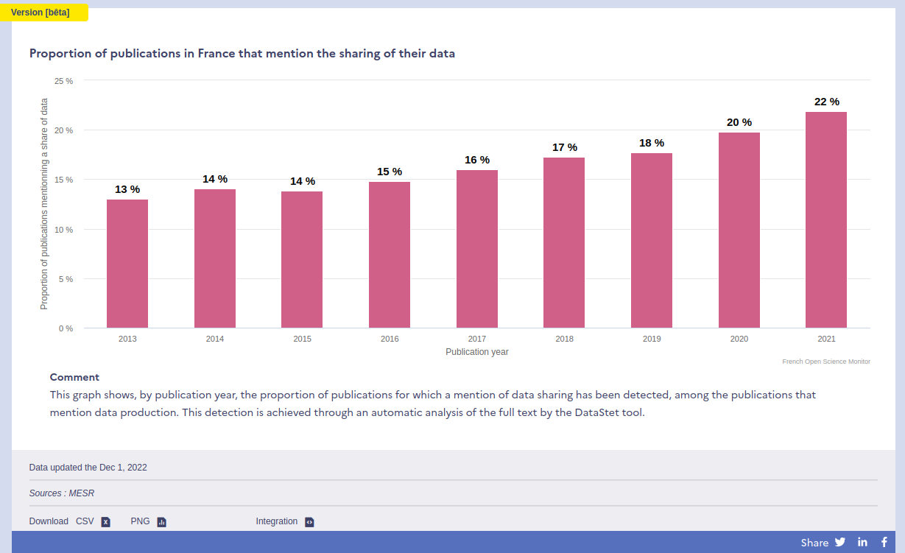... capitalizing on and complementing existing open sources
🏗️ Built at MESR within the FOSM framework
- 🏛️ Affiliations metadata
- PubMed, Crossref, HAL
- 🏗️ Crawling web pages
- 🏗️ Automatic country detection (affiliation-matcher)
- 🔠Characterization of open access
- Open access detection: Unpaywall
- 🏗️ Classification of open access types
- 🤖 Thematic classification
- Training data : Pascal and Francis, Field of Research (FoR)
- 🏗️ Automatic classification models (fastText)
A modular approach ...

Comparison with major international databases
Lauranne Chaignon, Daniel Egret; Identifying scientific
publications countrywide and measuring their open access: The case of the French Open Science Monitor (FOSM).
Quantitative Science Studies 2022; 3 (1): 18-36. doi: https://doi.org/10.1162/qss_a_00179

- "The open-source strategy used by the FOSM effectively identifies the vast majority of publications with a persistent identifier (DOI) for Open Science monitoring."
Sensitivity of open access rate measurement (1/3)
Lauranne Chaignon, Daniel Egret; Identifying
scientific
publications countrywide and measuring their open access: The case of the French Open Science Monitor (FOSM).
Quantitative Science Studies 2022; 3 (1): 18-36. doi: https://doi.org/10.1162/qss_a_00179

The OA rate varies according to the source, but the more diversified the source, the lower the sensitivity.
Sensitivity of open access rate measurement (2/3)
The OA rate varies according to the date of observation (which is rarely specified).
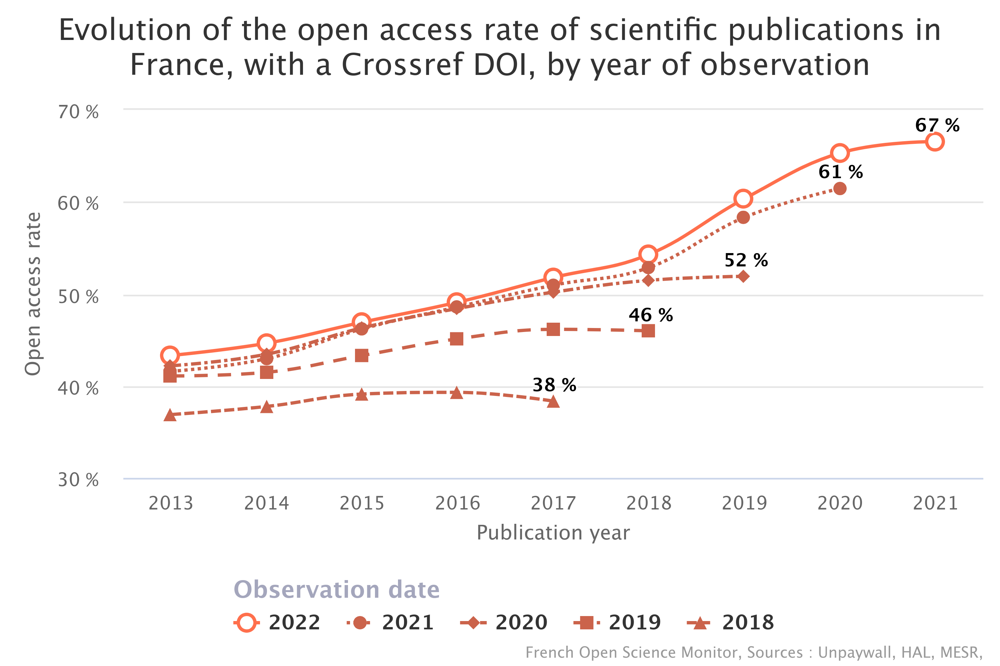
Sensitivity of open access rate measurement (3/3)
Numerous dimensions analyzed in the FOSM: discplines, publication type, languages, distribution platform ...
Information-sharing services for a variety of uses
- "General" audience : website, designed with the help of design agency WeDoData frenchopensciencemonitor.esr.gouv.fr
- Demultiplier : to provide the means to build a local variation (establishment, laboratory, etc.) very easily and with the same rendering as the national FOSM (cf. the FOSM local variation for University of Lorraine)
- Data export : dump of datasets available for download in CSV, jsonL
- Academic : detailed methodology available on HAL
- IT : the source code is open
New for 2021: new website

New for 2021: analysis by observation date

New for 2021: health section

Next milestones
- 🗄️ Integration of indicators about ORCID integration in France
- 🧑‍🎓 Thesis
- 📠New functions for local variations of the FOSM (funders, HAL identifiers)
- 🙠Open Code
- 📊 Open Data
- 🧪 Transparent methodology
- 📢 Open talk
- OpenAlex released the data about the world's research in CC0
- Open Access Dashboard by COKI
- CWTS released the Leiden Ranking Open Edition
The Open outputs
What's new since 2018 ?
❔ Questions ?
📨 anne.lhote@recherche.gouv.fr
📨 bso@recherche.gouv.fr
🦣 https://mas.to/@annelhote